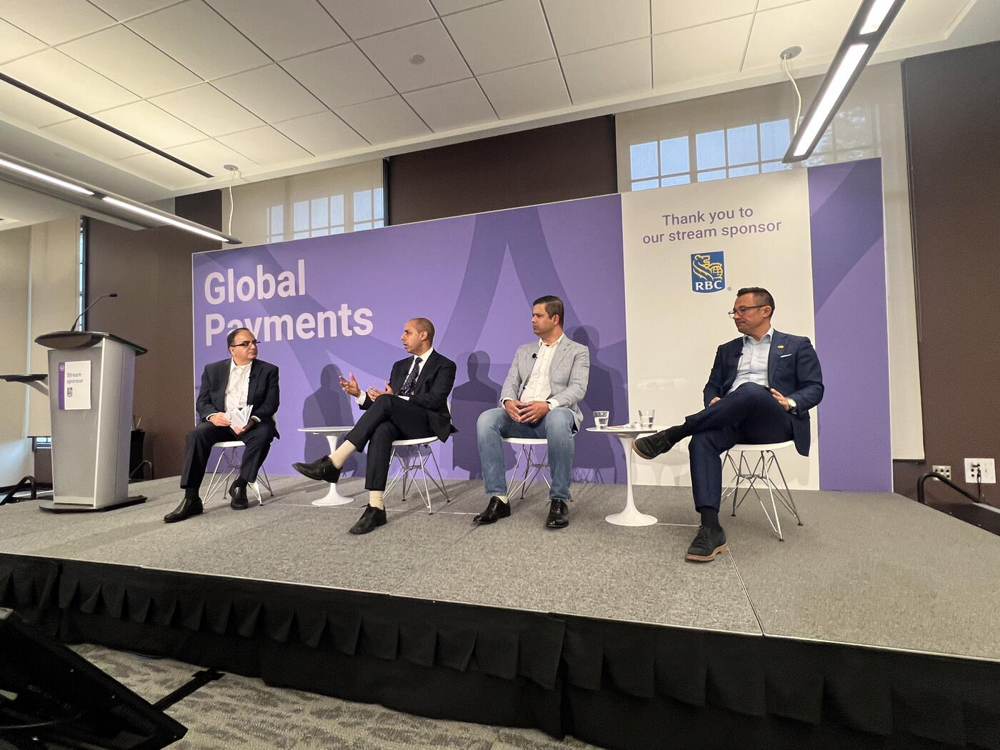

Tokenization, Programmable Finance, and the Future of Financial Infrastructure
Moderated by Manishi Varma, Partner in Business Consulting at Infosys, this panel brought together the consultant lens (Infosys), the major Canadian bank perspective (TD Bank Group), and a global card network's product seat (Mastercard) to explore how tokenization is evolving from a narrow security mechanism into a foundational layer for programmable finance, identity, and machine-native commerce.
While the conversation began around tokenized deposits and settlement efficiency, it gradually expanded into broader themes including digital identity, compliance automation, economic disruption, AI-driven commerce, and the restructuring of financial value chains. The composition of the panel — Infosys × TD × Mastercard — meant the discussion moved deliberately between bank-side operational realities, network-level product strategy, and the cross-cutting consulting view of the transformation required.
Tokens as Programmable Containers for Trust

A recurring theme throughout the discussion was that tokenization is no longer viewed simply as a way to secure card credentials or represent crypto assets. Instead, panelists increasingly described tokens as programmable containers for trust, identity, permissions, compliance logic, ownership, and transaction context.
Tom Pawelkiewicz, Vice President of Product at Mastercard, framed the principle in the cleanest terms on the panel: merchants and autonomous agents do not necessarily need access to sensitive personal information such as a consumer's name, address, or date of birth. Instead, tokenized identity and contextual attributes could selectively disclose only what is necessary for a transaction — such as age range, brand affinity, sustainability preferences, or loyalty status.
Pawelkiewicz pointed to Mastercard's recently introduced "insight token" as a concrete example of this direction: tokenized consumer preferences can be shared with merchants and agents without exposing the underlying personal data.
This marked a notable shift in framing. Tokenization is no longer only about payments; it is becoming a broader architecture for selective disclosure, contextual commerce, and programmable trust. The implications for agentic commerce were repeatedly implied throughout the discussion, particularly as panelists referenced autonomous shopping agents, AI systems interacting with merchants, and machine-to-machine transaction flows.
Banks: Still Early, But Don't Sit Out
From the banking seat, Asad Joheb, AVP of Enterprise Payments at TD Bank Group, acknowledged that most financial institutions remain in the early stages of experimentation. Rather than pursuing wholesale replacement of existing infrastructure, banks are taking a narrow and highly controlled approach — implementing limited pilots focused on institutional clients, treasury operations, tokenized deposits, tokenized bonds, or settlement optimization.
Joheb and the broader panel stressed that institutions should not "sit on the sidelines," even if the use cases remain narrow today, because experimentation is necessary to understand the architectural and operational implications of programmable financial systems. The cost of not engaging now is not the missed pilot — it is the inability to redesign treasury, liquidity, and compliance operations fast enough when the broader system shift arrives.
The Architecture Problem: Built for Batch, Not Real-Time
The panel repeatedly emphasized that the current financial system was not designed for real-time programmable settlement. Existing architectures remain heavily batch-oriented, with numerous reconciliation layers, delayed settlement cycles, fragmented messaging systems, and manual compliance processes.
One speaker described how true atomic settlement requires payment and asset exchange to occur simultaneously on the same rail, fundamentally changing the assumptions underlying existing banking infrastructure.
As a result, the transition toward tokenized financial systems raises deep architectural questions. Banks must rethink:
- Liquidity management
- Treasury visibility
- Real-time balance awareness
- Settlement orchestration
The discussion highlighted that many treasury and liquidity systems today still lack real-time visibility into institutional positions. Transaction-level compliance also emerged as a major challenge. Existing AML, sanctions, and KYC frameworks are often case-management-oriented and dependent on manual intervention, making them poorly suited for autonomous, instantaneous, machine-driven transaction flows.
The Dual-Reality Problem
The panel also explored the implications of distributed ledger systems coexisting alongside traditional banking infrastructure. Several speakers described the operational complexity of maintaining "dual realities," where tokenized assets exist on distributed ledgers while financial institutions must simultaneously maintain traditional accounting books, reporting structures, and regulatory systems.
This reconciliation challenge was identified as one of the key frictions preventing rapid large-scale adoption.
Value Chain Compression: Who Loses?
The Infosys consulting voices on the panel — moderator Manishi Varma and Vivek Dwivedi, Regional Head at Infosys — pushed the discussion toward the gradual compression and renegotiation of financial value chains. Tokenization has the potential to reduce the number of intermediaries involved in transactions, particularly in cross-border payments, correspondent banking, custody, and capital markets infrastructure. While some intermediaries may survive, their economic roles and pricing power could change significantly.
Cross-border payments and correspondent banking were highlighted as especially vulnerable to disruption. The panel pointed to emerging token-native players such as Circle and Coinbase as examples of organizations building vertically integrated payment infrastructures capable of bypassing parts of the traditional correspondent banking model.
One panelist explicitly stated that if they were operating a correspondent banking or clearinghouse business today, they would already be preparing for meaningful disruption.
The Network Pushes Back
At the same time, Pawelkiewicz (Mastercard) argued that trust infrastructure remains highly valuable, even as rails evolve. Mastercard has been operating tokenized payment systems for over a decade, and Pawelkiewicz described a long-term vision where primary account numbers (PANs) disappear entirely in favor of fully tokenized commerce environments.
In his framing, payment networks continue to provide essential value through trust, fraud management, identity assurance, rewards ecosystems, and transaction guarantees — regardless of how the underlying settlement rails evolve.
Machine-to-Machine Micropayments
A particularly important part of the conversation focused on machine-to-machine micropayments and AI-driven monetization models.
One speaker described a future where AI systems could autonomously purchase small pieces of digital content — a statistic, a news excerpt, a song fragment, or a research insight — for fractions of a cent. This was presented as one of the most compelling long-term use cases for tokenized payment infrastructure and protocol-native micropayments.
The panel linked this directly to the growing need for monetization frameworks capable of supporting AI systems and autonomous digital agents operating at internet scale.
Fractional Ownership and Access
Another significant opportunity discussed was fractional ownership enabled by tokenization. Panelists argued that programmable ownership structures could dramatically expand market participation by allowing users to purchase fractional interests in assets such as real estate, investment funds, or other traditionally inaccessible instruments.
This was framed not only as an efficiency improvement, but as a mechanism for creating entirely new revenue streams and expanding access to financial products.
The Pragmatic Conclusion
Despite enthusiasm around these possibilities, the overall tone of the discussion remained cautious and pragmatic. Joheb (TD) and the Infosys consultants repeatedly stressed that:
- Infrastructure readiness remains limited
- Regulatory frameworks remain fragmented across jurisdictions
- Operational transformation inside financial institutions takes time
- Public blockchain systems do not naturally align with jurisdictional boundaries, creating additional complexity around compliance, auditing, and regulatory interoperability
The discussion ultimately revealed that the industry is still in an exploratory phase. The underlying technologies have matured enough to demonstrate clear operational benefits in controlled pilots, but the broader financial ecosystem — including compliance systems, treasury operations, settlement infrastructure, and regulatory coordination — is not yet fully prepared for large-scale programmable finance.
At the same time, the panel strongly suggested that financial infrastructure is steadily evolving toward a future characterized by programmable trust, real-time settlement, tokenized identity, machine-native interactions, and autonomous economic coordination. While the speakers primarily framed these developments through the lens of operational efficiency and infrastructure modernization, the conversation increasingly pointed toward a broader transformation in which AI systems, autonomous agents, and programmable financial relationships become native participants in the global economy.
Key Takeaways
- Tokens are evolving from "secured card credentials" into programmable containers for trust, identity, permissions, and context (e.g. Mastercard's "insight token").
- The current financial stack is built for batch reconciliation, not atomic real-time settlement.
- "Dual realities" — DLT + traditional books — is one of the largest adoption frictions.
- Correspondent banking is the most exposed value-chain segment; Circle and Coinbase are cited as token-native disruptors.
- Mastercard's long-term vision: PANs disappear entirely in favor of fully tokenized commerce.
- Compelling long-term use cases: M2M micropayments for AI content consumption, fractional asset ownership.
- Industry is exploratory — infrastructure, compliance, and regulatory coordination are not yet ready for scale.